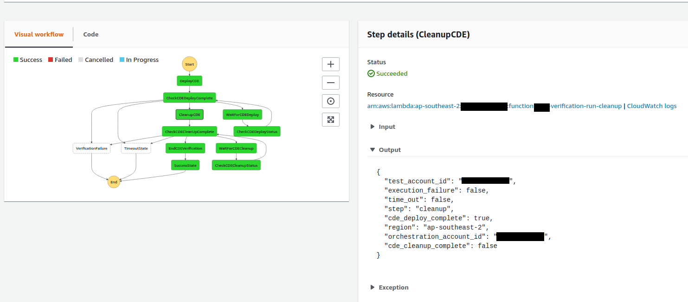

name: inverse layout: true class: center, middle, inverse <div class="footer">versent.com.au | <span class="fa fa-github fa-fw"></span>galactose</div> --- name: standard layout: true class: standard <div class="footer">versent.com.au | <span class="fa fa-github fa-fw"></span>galactose</div> --- template: inverse <br> ## Orchestrating complex (not complicated) tasks using ## AWS Serverless and Python <i class="em em-x"></i><i class="em em-computer"></i> & <i class="em em-snake"></i> Michael Kelly PyConAU 2019 <br> ??? Good afternoon everyone, my name is Michael Kelly, before we kick off I would just like to say thank you to PyCon for having me here and thankyou to Versent, who I work for, for letting me attend great conferences like this one. A little about me, I am a team lead in a cloud product division at Versent, focussing on infrastructure orchestration. Versent provides Mode 2, autoscaling, autohealing cloud architecture solutions using AWS. Versent is always looking for dedicated cloud engineers who know Python so if you're in the market I'll be around after the talk. Let me know and I will be very happy to put you in contact with someone. --- template: inverse ## Why? ??? So why did I choose this subject? AWS is a big part of my career at the moment, Versent *almost* exclusively work with the AWS platform for delivering cloud solutions. Over the last nine months I've been working with Step Functions, compared to many other ways I have tried to orchestrate the build and tear down of applications Step Functions have by far been the most powerful, cheapest and complete solution. The service is very powerful and can do a lot but it can be easy to get yourself stuck, so I hope to go through some of the ways that can happen today and provide some service native patterns to scale more gracefully and build great services. --- template: inverse ## What does this have to do with Python and why are you bothering us all with this? ??? This talk is primarily about orchestrating tasks where you're already hosting resources in AWS and you're looking for the best way to natively do it. When I initially got into Python a while ago I found it to have a pretty gentle learning curve for beginners. Using Lambda and Step Functions I also found this to also be the case. With Lambda it is easy to build something that's useful by knowing some initial key concepts about the service and about the Python programming language. Step Functions are an extra layer on top of Lambda and requires a few more simple concepts to be able to build some valuable tools in the field of infrastructure orchestration. You can pick up a little and get a lot of mileage out of it. --- template: standard ## In this talk <br> <br> - Lambda and Step Functions - How to use these services in a project - Patterns to use when things get complicated ??? So, in this talk I will quickly go over Lambda and how it fits in. I'll dive into a bit of Step Functions and the service primitives that are available. I'll go into how these can be used as solutions in a project and what a general solution repository would look like. Finally I'll go into hints I've picked up for when things get complicated. --- template: inverse ```text >>> import this The Zen of Python, by Tim Peters Beautiful is better than ugly. Explicit is better than implicit. Simple is better than complex. Complex is better than complicated. Flat is better than nested. Sparse is better than dense. Readability counts. Special cases aren't special enough to break the rules. Although practicality beats purity. Errors should never pass silently. Unless explicitly silenced. In the face of ambiguity, refuse the temptation to guess. There should be one-- and preferably only one --obvious way to do it. Although that way may not be obvious at first unless you're Dutch. Now is better than never. Although never is often better than *right* now. If the implementation is hard to explain, it's a bad idea. If the implementation is easy to explain, it may be a good idea. Namespaces are one honking great idea -- let's do more of those! ``` ??? The name of this title is taken from when you make the call to `import this` in the interactive terminal, I think there is some great general advice to be gleaned from there and some of those Pythonic patterns can apply to orchestrating with Step Functions. --- template: inverse ## Audience ??? So out of curiousity, a show of hands, other than being Python engineers does anyone host workloads in AWS? Anyone working with serverless, or already doing thing with Step Functions? Nice. --- layout: standard ## Lambda - Cheaper than hosting servers - Little configuration - Encourages refactoring, microservices architecture - Easy learning curve ## Limitations - Max 15 minutes runtime - Bounded resources ## Examples - Cron server backups - Nightly janitor tasks - Compliance checking ??? So as everyone knows Lambda and serverless has been around for a few years and you get can very far with it if you know a little bit of Python. It has a lot of positive things going for it - it's cheaper than hourly instance hosting - you don't really need to be concerned too heavily with configuring an underlying environment to get started - I find that writing for Lambda functions encourages refactoring your code to be more modular and operate for shorter time periods - As I mentioned earlier it has a very easy learning curve Obviously not all applications fit within the bounds of Lambda, but usually what you can do is build the deployment tools using serverless patterns that manage those applications that can't be built serverless. An example of this is having serverless backup tasks, serverless nightly on/off switches for your non-critical infrastructure or serverless compliance tools. So if you have some classic app in a server you can orchestrate around it with step functions, manage the state of the servers with SSM Run Commands and perform infrastructure maintenance tasks with services like Lambda and CloudWatch events. --- layout: standard ## Lambda Functions <br> ```python def lambda_handler(event, context): ... do work here ... return result ``` <br> - Lambda function entry point - `module_name.entry_point` - Lambda code package bundles entry point handler + referenced Python modules ??? What's the standard way of using Lambda? So if you've not used Lambda before the code part of the service essentially has a referenced entry point where you can take in some arguments from an external service into a dictionary usually labelled `event`, perform some work in the handler or called functions or modules imported into the package and return a computational result. In Lambda you can interact with the AWS service APIs via Boto and perform tasks useful to the cloud infrastructure. So cool story, but these are just individual task handlers, ideally you would be able to chain these, persist data and perform some control logic. This leads us to Step Functions. --- layout: standard ## Step Functions - State Machines - States with Input, Output, Exceptions - Execution parameters - Comes with state diagrams out of the box ## Examples - Application orchestration - build - deploy - graceful clean up - Automated testing w/ metric tracking - Environment bootstrapping - Batch processing - ETL - Message workflows ??? AWS Step Functions is a service that gives you a set of primitives that can be combined to perform actions in a controlled way depending on control logic between states. The primary object of Step Functions is the State Machine. A State Machine is implemented in a similar fashion to a formal state machine, where you have sets of states with transitions connecting them, an initial state, accepting states and potential trap states. This is where the analogy to the formal state machine breaks down, the initial state variables are dictated by an execution payload when being triggered by some event and each state has extra behaviour that can be invoked. So what are State Machines general use cases? I've found them to be really good at building and tearing down cloud applications in a factory pattern, They can be used to perform end to end testing of your application deployment. You can manage the bootstrap of AWS accounts with resources needed for your project So this is just a few uses of Step Functions. The service primitives provided by the service gives you the control you need to build systems like this. Essentially any simple orchestration task that can happen within the span of a year can work within this framework. If your job takes longer than a year there are ways around this but you will need to architect for it. --- layout: standard ## State Machines - State Types - Wait: Hold for a nominal period - Choice: State flow control logic - Parallel: Sub-state machine with execution branches - Pass: No-op, modify global dictionary - Task: Execute a Lambda function - Succeed/Fail: Indicate execution status <center></center> ??? Lets look at the available primitives for State Machines, these are states. Each has a type. These include wait states where you can just wait a fixed period, choice states where you can use the inputs and outputs of other states to work out where the state the machine should transition to next. Parallel states which allow execution to occur over two or more branches of the state machine. Pass states allow you to perform meta-actions like modify the information being passed between states. The state you will be using the most is likely the task state that triggers an execution of a service integration. The most popular and one I will focus on is Lambda, complete with inputs from previous states and outputs out to successive states. All of these states can also be augmented with exception catch and retry logic or flow control logic which I will cover later. Having this you can see some pretty complex behaviour can be expressed with State Machines, you can set waiting loops, have contingency states when things fail, perform tasks in parallel. The main thing really though as the name suggests State Machines provide the piece that was missing from Lambda, the ability to persist state. Pictured here is an example of a state machine graph. Step functions comes natively with a graph visualisation tool for your defined state machines. This is one I've written that handles testing for our Customer Deployed Environments, it will deploy our application and wait for the process to complete. It then tracks time to deploy and whether it was successful or not. It then terminations the environment, and tracks the time for that also. You can also see time-out, failure and success states which dictate the success or failure of a machine execution, which can also be tracked with metrics via CloudWatch so we can keep a record of any regressions or long running builds. --- layout: standard <br> ## What do you get from this? - Exposing massively parallel services - Handling orchestration with explicit contingency handling - CI/CD can be slimmer, push logic and permissions to Step Function - Limited Lambda configuration - No server management, all tasks executed by chained Lambdas <br> ## CI/CD integration - Still need CI/CD - Your CI/CD will be less tightly coupled to implementation logic - Easier to swap out - Merges to repositories can trigger CI, CD into an environment - Deployment would trigger State Machine execution. ??? So thats all well and good but why would I use this? The service is highly scalable, it natively allows parallel executions so it's listening for execution requests and can handle a million open requests. You can use Step Functions as the entry point into the logic of your orchestration and be able to handle edge cases when unexpected behaviour arises You are getting all of the benefits of using Lambda, you're not wrestling with server configuration or Operating System implementation details So saying this you still need CI/CD solutions but you can easily move away from Orchestration "god boxes" that can do too much You can setup light weight agents that just have permissions to execute Step Functions, which have permissions bound to their respective Lambda functions so there is less chance of the permissions given to the agent being used in an unintended way. --- layout: standard <br> ## Project Layout - Infrastructure as code - CFN templates - Makefile to expose service deployment operations - Lambda source - Meta-data files ``` bash cfn/ state-machine-deploy.yaml state-machine-cleanup.yaml src/ deploy_bucket.py generate_keys.py scripts/ build.sh deploy.sh pre-commit.sh Makefile Pipfile README.md ``` ??? So this is pretty cool, Step Functions has a well defined niche in orchestration of your service, if you were to build a project like this what would it look like to deploy with best practices in mind? As engineers we always want to automate everything as much as possible, so using infrastructure as code is the way to go. Cloudformation templates is generally your best option for your AWS resources. The Lambda service requires generating a bundled package containing your source code, if you've used Lambda you will be familiar with this, which means the source and the bundling functionality can also be kept in the repository with your infrastructure definition. You can define an interface for your project repo with a Makefile, with actions like build, deploy, install, etc. This way whatever is deploying your services has a common interface to work with. --- layout: standard class: middle ```bash aws cloudformation package \ --s3-bucket $(CONFIGURATION_BUCKET) \ --template-file cfn/state-machine-deploy.yaml \ --output-template-file state-machine-deploy.packaged.yaml aws cloudformation deploy \ --s3-bucket $(CONFIGURATION_BUCKET) \ --template-file state-machine-deploy.packaged.yaml \ --stack-name state-machine-deploy \ --capabilities CAPABILITY_NAMED_IAM \ --no-fail-on-empty-changeset \ --parameter-overrides \ ConfigurationBucket=$(CONFIGURATION_BUCKET) \ Environment=$(ENVIRONMENT) \ Branch=$(branch) \ --tags version=$(VERSION) environment=$(ENVIRONMENT) branch=$(branch) ``` ??? With all of this defined your deploy script simply requires calls to the AWS CLI from the Makefile to trigger the creation of your infrastructure as code. Even with just this project template you can build a microservice framework where each state machine provides some orchestrated service and using them as factories to produce application resources. These factories can be deployed in a mirrored fashion in each of your environments for development, integration, staging and production for testing purposes. You now theoretically have enough to start a project, using the state machines as application factories you get going with best intentions. --- layout: standard ## Complications Arise <br> - Code projects start with the best intentions - Organic growth - Happy path code - Code smells - Service build takes 30 minutes, go get a coffee - Service dependency problems - Why am I getting 500s? - Intermittent application timeout - Service resource limit exceeded - How do you get back on track? <br> <center> Pain is never out of season if you go shopping for it -- Tim Ferris, Tribe of Mentors </center> ??? You love serverless so you rush in with best intentions. Like many projects before it, it grows organically. More features get tacked on to meet requirements. Very slowly you end up with a bit of a beast of a solution with one or more of the problems listed above... A lot of pressure can be put on a project, quality can fall by the wayside and best practices can go out the window to get a first iteration of a project completed. --- template: inverse ## How do you simplify things when it gets complicated? ??? So, all this what are some things you can do to simplify a complicated code situations like this? Here are a few recommendations based on what I have come across working with serverless orchestration and Step Functions. Give some of these try and revisit this when you find things are getting complicated. --- template: standard ## General Toolset and Hygiene <br> - Linting: https://github.com/python/black - Unit-tests: Standard library, pytest - Coverage reports - Git hooks - Github apps and integrations ??? I'll start with your standard project grooming, if you have been a developer for any length of time you may have heard these - Life is too short to worry about linting, I really like the Go pattern of enforcing a formatting style, black is a great way to do the same thing. The associated Henry Ford quote sums it up pretty well "you can have it in any colour as long as it's black" - Obviously you are unit-testing, whether this is just using the standard library or if you are using pytest or something like Hypothesis - Setup coverage reports to get an idea of how well covered your code is with tests. Your reports can be bundled with releases, even if you are not enforcing a coverage percentage floor you can let people decide to use your release based on whats available and show you are performing due diligence. - Git offers a lot of workflow automation and hooking linting and other types of checking into your source control solution can make these things happen behind the scenes - Github Apps and integrations, this one is a recent one for me, another team member recently introduced automated release drafting and pull request categorisation based off commit messages. Offloading project burdens to automation will definitely help out. --- layout: standard ## General Service Cautions <br> - State definitions are in JSON, no YAML option - Choice state: - State Machine checks for first match in Choices attribute - Undefined variable errors come up in grey and halt at runtime - No match sends execution to choice state default - On State Machine update existing executions use the original version - If your Lambda needs to pass output to a downstream state, make sure all branches return it ??? Just a few notes about working with the Step Functions specifically: - Defining a state machine needs to be done in JSON, whereas cloudformation can generally be in YAML, which is a little inconsistent but not a deal breaker - For choice states, if a variable referenced in your state definition is undefined in the JSON object at that point your state machine will stop. This seems to be because of the coupling between Lambda and the State Machines. This can trip you up if there are discrepancies between your state definition and your Lambda code and you won't find out until runtime. On the state machine dashboard this will come up as a halted state in grey. - If you update your state machine while there are executions (via something like cloudformation) the previous executions will continue to operate on the original version (could be an issue for your service in deployment for long running executions) - All branches of your Lambda code has to flow to a return statement passing back the results that go on to the next object downstream. You might get some confusing bugs if you have a branch of code that exits early for some case but doesn't pass on expected values. --- template: inverse ## Pre-flight Check <i class="em em-airplane_departure"></i><i class="em em-clipboard"></i> --- layout: standard ## Pre-flight Check <br> - Verify dependencies up front - AMIs - SSM Parameters - ECS images - Security Groups - VPCs etc - Validate inputs - Bounds and types - Requested resources ```python def lambda_handler(event, context): amis = get_ami_id('test-ami') env_name = get_ssm_parameter('/project/env') ... ``` ??? This is an easy one, Verify your dependencies up front with a pre-flight check. If you are managing a lot of dependencies it's easy for resources to go missing, or some piece of infra to not yet be in place, like missing AMIs or SSM parameters etc. Its worthwhile checking up front for these before you run the whole thing and risk losing 20 minutes of your day to a dud deploy. This can also happen a lot if you are working across AWS account boundaries, you may have expected some dependency to be present in a remote account but find it may be missing. It might even be worse and you may be orchestrating in the wrong AWS account, which is good to know early so you can break out and see what happened. The pre-flight check can be implemented as an initialisation state at the beginning of your execution, you can do things like collect the IDs of necessary resources, work out environment specific edge cases, like if your development environment runs extra tests or has more verbose logging flags. You can validate the execution parameters and be certain what's being passed in meets an expected contract. --- template: inverse ## Manage Data Flow <i class="em em-information_source"></i><i class="em em-sweat_drops"></i> --- layout: standard ## Manage State Machine Data Flow ### Inputs and Outputs - Execution parameters set the State Machine object initially - Data is persisted between states with `event` object - State context is held in `context` object - Environment defaults can be set in Cloudformation - Remove data that is not being used downstream ### Path Control - `OutputPath` to filter what comes out of a Lambda - `InputPath` or `Parameters` to limit what goes into a Lambda ### Alternatives - CFN and state definition parameter attribute - SSM parameters - S3 data ??? Data flow is a big portion of managing State Machines so here are a couple of general tips I have come across that help. As mentioned earlier, state machines communicate between states with a JSON object that translates in code to a dictionary. As you can imagine keeping the object small between states will simplify your State Machine and make it easier to track what is happening state to state, not passing on values that are unnecessary will assist with this. You can manage this with the `OutputPath` option in the State definition, you can limit which portion of the output gets sent to the next state so you can drill down to only have necessary values. Similarly you can use `InputPath` in the state definition to limit what goes into a states input, which can help with maintaining contexts between your states. Another solution to this problem is to find ways to pass data without using the input object. There are three ways I have found to do this: If you are using infrastructure as code and building your State Machine with Cloudformation you can add to the `Parameters` state definition attribute which let you modify the state JSON object in place to inject variables. This is useful if you have a test environment and have multiple branches of the same resources being tested next to each other. You can let the Cloudformation know about the branch you are on to scope resources and you can pass the value into the State Machine without having to pass it into the state machine on execution. You can store variables that are related to the account or environment you are operating from in Systems Manager parameters. Doing this you can bind these values to one place, and make reference to them in other parts of your orchestration and not pollute your dictionaries. In the case that you need to reference a lot of data you can use S3 and hold the S3 bucket path and access whatever you need there. S3 can hold terabytes of data so if you need that much you probably need to re-architect your solution. --- layout: standard ## Parallelism and Data Flow <br> - Splits JSON object into two copies - Convergence requires merging both copies <br> ```python def lambda_handler(events, context): success = all([event['success'] for event in events]) ... ``` ??? Data flow with parallelism is another case that needs to be managed. When you use the parallel state primitive it breaks the State Machine down into two or more sub state machine branches with their own copies of the input object. If you wish to share information between the two branches you need to manage some shared medium which comes with its own set of difficulties. Each branch has a termination point and each branch will block until the final branch has completed. Once the parallel state has completed it is the job of the next state to decide what to do with the n copies of the event dictionary and pass along the result. An example of this might be checking for the success of all branches of execution before completing. In each Lambda you set a `success` boolean that gets passed onto the converging state. The converging state iterates over the dictionaries with `all([event['success'] for event in events])` to tell if all went to plan. --- template: inverse ## Manage Parallelism <i class="em em-dancers"></i><i class="em em-twisted_rightwards_arrows"></i> ??? This segues nicely into the next set of tips, involving parallelism. Step functions actually provide a few different levels of parallelism you can take advantage of. What I described previously was the state primitive for parallelism, this is a type of "static" parallelism where the number of threads of execution is already known and are part of the State Machine. --- layout: standard ## Manage Parallelism - Statically defined - Nested Step Functions - Activity Workers ## Caution - Parallel Service interdependencies - Dynamic parallelism, resources and billing <center> </center> ??? An example of this is if you have a state machine that manages the bootstrap of an AWS account you use for orchestration. You know the account needs an S3 bucket to manage configuration and a specific DNS hosted zone. Each can be provisioned in parallel as neither has a dependency on the other. The parallel state can be used in this case. The next way to handle parallelism is by nesting State Machines, you can theoretically have x concurrent executions of a state machine so you can hand off x tasks to another state machine that can handle each uniformly and pass back the results through some shared medium like SQS or S3. Where the previous method of parallelism is static this is more dynamic since it is used for cases where you only know how many threads of execution you need at runtime. Warning also be careful with this method as it would be easy to hit API or resource limits or you may find out a month later that this process has kicked you square in the credit card. A good example of dynamic parallelism is for migrating servers. I spent some time a year back working on the automation of server migrations using a recent tool called CloudEndure. We had manager scripts that would execute the same worker scripts once for each server being migrated. Using Step Functions you could have a managing State Machine that calls a worker migration state machine that performs all the underlying tasks of migration into AWS without knowing at the beginning how many servers were being moved over in that wave. Finally AWS recently released activity workers. I personally haven't used the service but you can treat state machines as activities, where a manager process will hand off a token to a worker process, the manager can then block until the worker process has performed its task. It then returns it's token indicating completion. --- template: inverse ## Refactor to Wait <i class="em em-alarm_clock"></i><i class="em em-octagonal_sign"></i> --- layout: standard ## Refactor to wait in the Step Function <br> - Don't block in your Lambda function - Wait/Choice states - Callback patterns <center> <img src="img/wait-loop.png" width="325" height="300" alt="Step Function wait loop"> </center> ??? Another easy one, if you are moving over to Step Functions from a script or some other method of orchestrating, if you wait for resources do it in the Step Functions. They are designed to do it. Wait state primitives exist. Lambda functions can execute for a maximum for 15 minutes but you are being charged for those 15 minutes Here's an example of a pattern we use for waiting for resources to become available, a simple wait, status check, choice group that blocks until something is ready or fails or times out. Here I'm using in the bootstrap of an AWS account with standard infrastructure resources for a disaster recovery scenario. If we ever need to provision an AWS account I can be certain all the required resources are available using state machines. Another consideration with Step functions is if you are waiting for human approval, this is supported in Step Functions with the callback pattern. You can implement states that block until a token is returned --- layout: standard ## Service Exception Handling - Executing Lambdas can be the victim of exceptions. - Lambdas time-out if running longer than specified (or 15 minutes) - The Lambda service can raise errors which manifest as 500s - Exceptions can be handled at the state level and retries can be raised - Catch blocks for handling types of error with extra code - Build for state task idempotency <br> ## Handling Timeouts ```json "Retry": [ { "ErrorEquals": ["States.Timeout"], "IntervalSeconds": 3, "MaxAttempts": 3, "BackoffRate": 2 } ] ``` ??? Your Step Function is not executing in a bubble and it is subject to service API limits. You might be aware of known exceptions that can happen in your automation that you want to be able to recover from. Your Lambdas might take longer than expected and time-out. You might get generic exceptions that you might not know how to handle but at the very least you would like to track what happened and alert anyone responsible for operation. Step functions have native exception handling capabilities to allow retries when something has been raised If you have designed for your process to be idempotent you can implement subsequent retries to have follow up attempts to perform a task and be sure it happened the once. An example of this is checking to see if the resources a state is responsible for creating already exists. Depending on how you want to handle this you can perform an update on the second pass or just skip creation. This would make certain your resources are aligned with the latest code changes and be idempotent. So here you can see a snippet of a state definition that applies retry logic if the bound Lambda function has been running for longer than expected. It tries three times with 3 seconds as a base interval, adding 2 seconds each time for exponential back off. --- ## Service Exception Handling ```json "Retry": [ { "ErrorEquals": [ "Lambda.ServiceException", "Lambda.AWSLambdaException", "Lambda.SdkClientException" ], "IntervalSeconds": 2, "MaxAttempts": 6, "BackoffRate": 2 } ] ``` ## Retry Except on Timeout ```json "Retry": [ { "ErrorEquals": ["States.Timeout"], "MaxAttempts": 0 }, { "ErrorEquals": ["States.ALL"] } ] ``` ??? Some other examples of exception handling at the state level. You can see here some service level exceptions that are responsible for the Lambda service returning 500's. If you are running the state machine in a busy AWS account it's good to have these set up as a fall back in the rare case you hit a service exception. You can also implement default logic, if you want to explicitly raise time out errors as legitimate you can set max attempts to zero, otherwise catch all subsequent errors and perform the retry logic as desired. --- ## Service Exception Handling Transition to a handler state if certain exceptions are caught ```json "States": [ "HelloWorld": { "Type": "Task", "Resource": "arn:aws:lambda:<region>:xxxxxxxxxxxx:function:hello-world-handler", "Catch": [ { "ErrorEquals": [ "States.ALL" ], "Next": "Fallback" } ], "End": true }, "Fallback": { "Type": "Pass", "Result": "A generic error occurred.", "End": true } ] ``` ??? Similarly if you want to treat error cases with another approach you can handle this at state level with catch definitions. As shown in this state definition you can force a transition if specific exceptions are thrown. Really useful if you want to handle errors gracefully. --- template: inverse ## Break out to libraries <i class="em em-books"></i><i class="em em-books"></i><i class="em em-books"></i> --- layout: standard ## Break out to libraries - Build out to private libraries - Share to PyPi/Private - Associate relevant unit-tests, Coverage ## Library Boilerplate ```python from setuptools import setup setup( name='slack_helper', version='0.0.1', author='Joe Bob', author_email='joe.bob@legitcloud.com.au', license='2019 Legit Cloud', description='Helper functions for project wide neat Slack chat ops', py_modules=['helper'], package_dir={'': 'src'}, install_requires=['requests'] ) ``` ```bash python3 setup.py sdist bdist_wheel ``` ??? The great thing about a state machine is it is comprised of a bundle of lambda functions that operate like a standard python module. As with any project you can make reference to any library you have available you have pulled in to site-packages, bundled into the code zip and make available to the Lambda service. If you have built out an isolated piece of functionality you want to use across multiple factories or services, bundle it into your own library and pull it in when building. An example of this is if you had some wrapper helpers for tracking deployments in Slack. It would make sense that a few of your services may use this functionality. You can move this code over to it's own repository, create its own setup.py with the appropriate meta data and make it publically or privately available. --- layout: standard ## Library Reference ### Pipenv ```ini ... [packages] slack-helper = {git = "git+ssh://git@github.com/legit-cloud/slack_helper.git",ref = "master"} ... ``` ### Install ```bash pipenv install --python 3.7 ``` ### Build ```bash VENV=$(pipenv --venv) (cd ${VENV}/lib/python3.7/site-packages && zip -rq9 lambda.zip .) zip -jrq9 lambda.zip src/* ``` ??? Once this is available remotely you can pull these helpers into the pipenv virtual environment and they can be bundled into the Lambda zip bundle. From here these can be uploaded and referenced in your cloudformation, integrating them into your orchestration. This is very powerful as out of the box you get libraries that can be used across your state machines, if you have designed nice abstractions for your modular resources libraries are a good place to store and reuse these. --- template: inverse ## Debugging <i class="em em-ant"></i><i class="em em-bug"></i><i class="em em-beetle"></i> ??? Once you get your code into a state machine and its running and something goes wrong how to you work out what happened? --- layout: standard ## Debugging <br> - State Machine diagram - State: - Input - Output - Exceptions - Execution history - CloudWatch Logs ??? If you followed some of these steps up until now things will be clearer. Your unit-tests can catch a lot of issues so make sure you have those. Integration tests will catch even more. If you are working in a test environment you can diagnose a lot of runtime issues in the service - The State Machine graph is an excellent visual tool, you can click states and get exceptions or jump to cw logs - The State machine dashboard also lets you see all Inputs Outputs Exceptions that belong to a state and contains a trace log of every state transition - Logs will work in production, your trace analyser won't. It's really worth it to use a logging module and have verbose logging for your development environment - If your application deploy process is predicable enough you can write state machines that manage the deploy and tear down to confirm the health of your orchestration - Cloudwatch Rules are great for scheduled regular executions, the results of the execution can go to your choice of monitor (CW metrics, Slack, etc) - So like me you can then have a cloudwatch rule that triggers a lambda that triggers a testing state machine that triggers your deployment state machines and tells you if everything is still healthy. We currently have this in our integration environment watching our development branch. It runs every six hours in an account isolated from our other accounts to mitigate against the risk of errors occurring because of rate limit throttling, resource limits which may happen where other devs are also testing. --- class: center, middle ??? --- class: center, middle  ??? --- class: center, middle ??? --- class: center, middle ??? --- layout: standard class: middle ## Summing Up <br> #### <span class="fa fa-file fa-fw"></span> Slides: https://github.com/galactose/pyconau2019-orchestrating-step-function-py #### <span class="fa fa-github fa-fw"></span> Github: https://github.com/galactose #### <span class="fa fa-address-card fa-fw"></span> Who am I: https://ashiny.cloud/page/about/ #### <span class="fa fa-envelope fa-fw"></span> Mail: michael.kelly.au@gmail.com <br> <center>Questions?</center> ??? To finish up AWS Step Functions is a very powerful service, and I like it for a lot of reasons. I think a lot of Python programmers would also appreciate it. Give it a go if you have an applicable use case. I've given a run down of what the service is, how it works and some details of the service I didn't get when I first tried it. If you try it and your project grows you might need to implement some measures to help scale it out, which I covered. This wasn't a complete guide to Step Functions, it is a very feature rich service, but is hopefully enough for anyone considering using it. I've linked to the slides here if anyone is curious. Are there any questions I can answer?